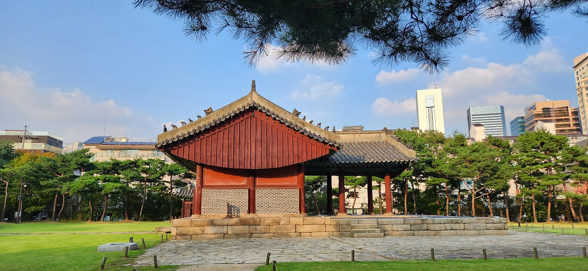
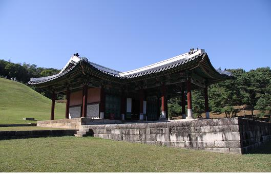
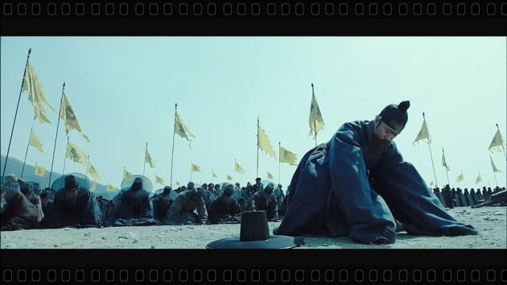
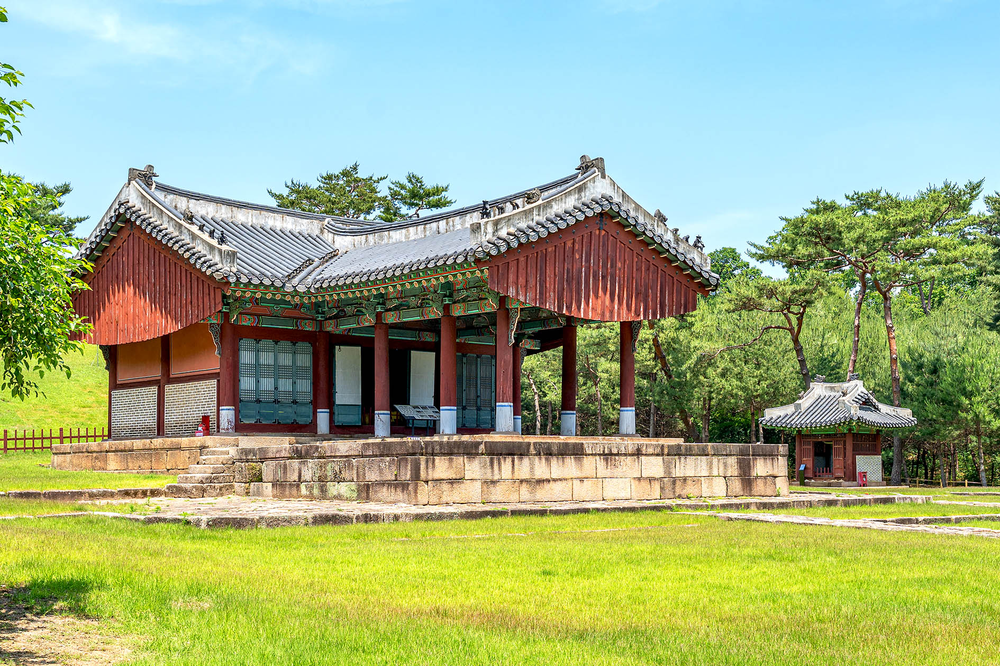
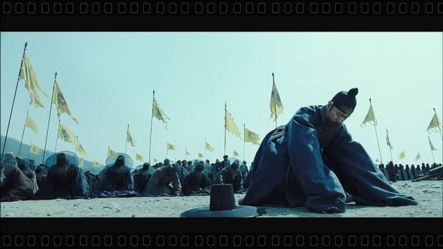
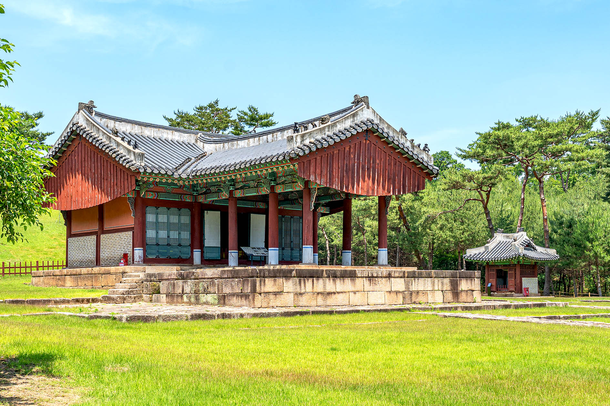

대자보
바쁜 강남 속 가장 느린 공간 선정릉 
선릉과 정릉
서울특별시 강남구 선릉로 100길
대자보
마음의 안식처 영릉

영릉
경기도 여주시 세종대왕면 영릉로 269-50
정자각
조선왕릉에서 제사를 지내는 정자각은 ‘丁’..
왕릉 잡학사전
삼배고두례
이달의 왕릉
태강릉
선릉과 정릉
서울특별시 강남구 선릉로 100길
영릉
경기도 여주시 세종대왕면 영릉로 269-50
조선왕릉에서 제사를 지내는 정자각은 ‘丁’..
삼배고두례
태강릉
